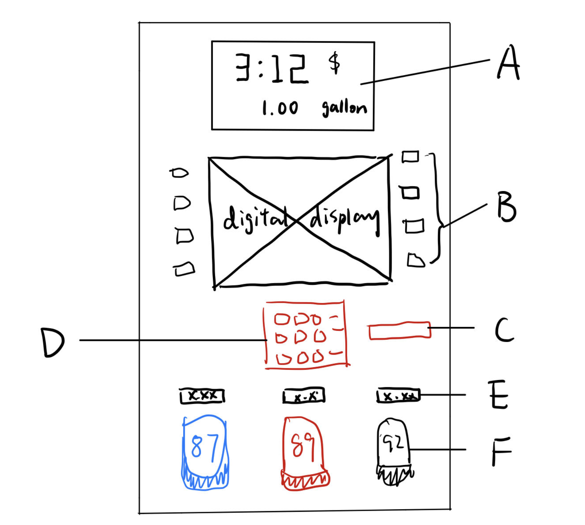
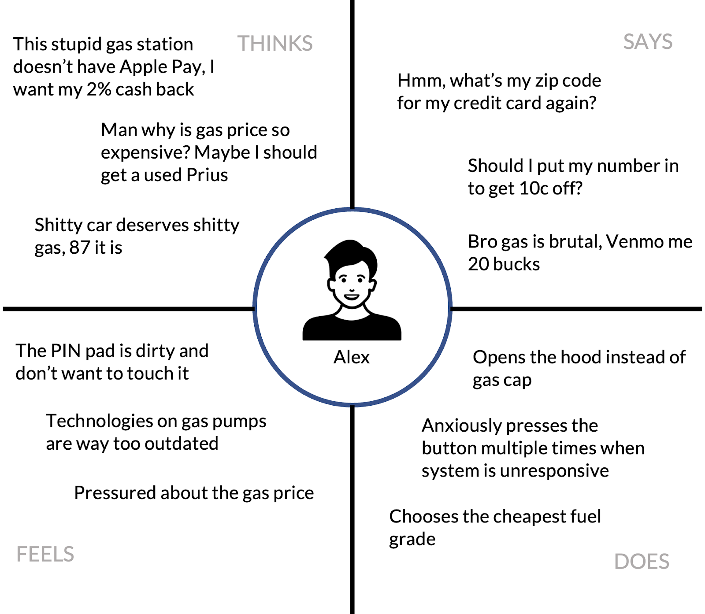
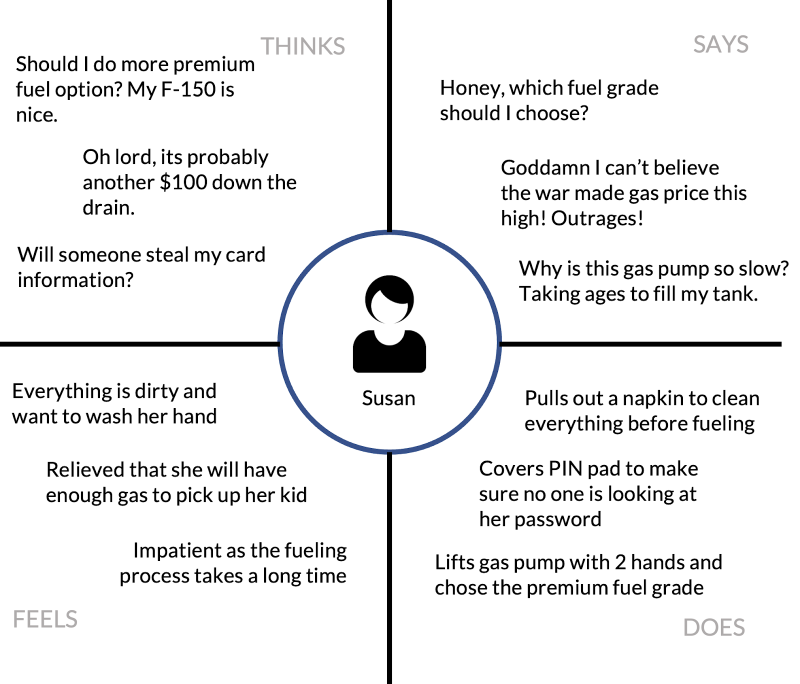
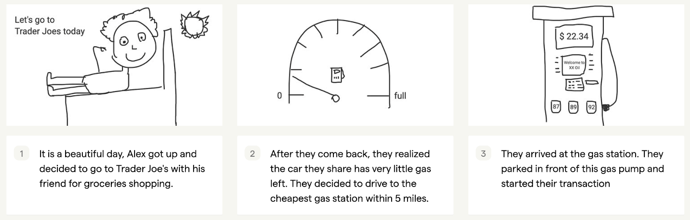
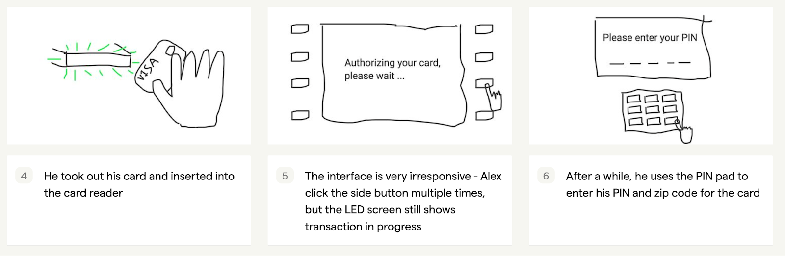
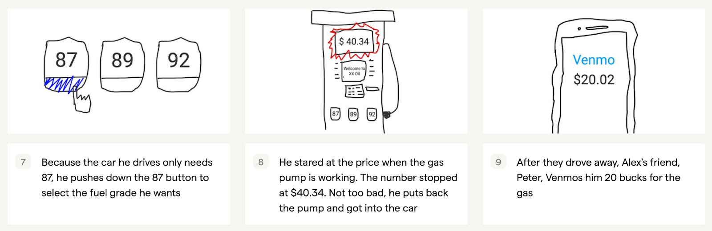

Project 1: Personas & Storyboarding
Part I: Preparation
1) Select an accessible interface in public
Ever since I received my driver’s license last year, the gas station is a place I’d frequent from time to time.
Although there are many different gas station chains (Shell, bp, Stop & Shop, Mobil, etc.), I observed that the
interface of the gas pump in those different gas stations is mostly the same, and I remembered that adding gas
wasn’t the most intuitive experience for first-timers. That’s why I decided to choose the gas pump interface as my
public interface to study.
2) Making a sketch of the gas pump interface
Sketch of a common gas pump interface
Purpose: handle payment, enable fuel grade selection, and display price information to the user

A: Information panel, displaying price and storage metrics
B: Touch-sensitive button, allowing users to control the display
C: Credit card reader, reading credit card information
D: PIN pad, handling number inputs
E: LCD display, displaying per gallon price for each fuel grade
F: Fuel grade button, allowing users to choose fuel grade
Part II: Recording Observations
1) Key Observations
Overall, most users could use the gas pump interface to add fuel to their vehicle. These are some of the key
characteristics I observed:
- Half of the user initiates the transaction by directly inserting their credit card, while the other half uses
the LED screen to initiate transactions
- There is no clear way to terminate the transaction, and one user had to go to another pump to continue the
transaction
- The interface requires users to look down to select the fuel grade, and the user often hesitates on which fuel
to choose as they are cautious not to choose the wrong grade
- Very few users would wait to receive the paper receipt
- The button on the side of the LED screen does not produce any touch response, and sometimes the user would
click
the button multiple times
- During fueling, users usually put their attention to Part A in the sketch, to track the current price and
volume
2) User Research Questions
- Do you feel that the gas pump interface was easy-to-use, and the affordance of the side buttons is natural?
- How would you rate your experience on a scale of 1 (worst) to 10 (best)?
- Where does your attention stay when you are fueling?
- How often do you go to the gas station?
- If you have been to different gas stations, do you think there is a learning curve between different pumps?
- Is there any new feature you would like to see on a new gas pump?
- Have you encountered any difficulties during the fueling process?
- Are you happy with the physical feedback of your commands on buttons and/or fuel-grade selectors?
- Is there anything else you would like to add?
3) Summarized Responses
- Users generally feel the pump is easy-to-use, but the experience does have room for improvement - on a scale
of
1-10, users surveyed gave an average rating of 7.2.
- 43% of the users had previous experience pressing the wrong button on the gas pump and were unable to cancel
the
transaction
- Most people reported that there is no learning curve between gas pumps of different brands
- Users were not satisfied with the control feedback of the side buttons - there was a short beep after each
touch, but there was no physical feedback. Hearing-impaired users might receive no feedback at all.
- Almost all users focus on the price LCD display (Part A) during the fuelling process
Part III: Personas

“Geeky” Alex is a student who commutes in his car. He depends on financial support from his
parents and he embraces all kinds of new technologies.
Right now, his main concern is that the interface is irresponsive and the gas pump does not accept touchless
payment. Since the gas station I visited is near Brown University, there are a lot of students who use their
service.

“Thoughtful” Susan is a married mother with 2 kids. She cares a lot about hygiene and she is
always thinking about her family. She doesn’t mind paying extra for better gas, but she is rather impatient to wait
to fuel up the big tank in her F-150.
Right now, her concern is that interface does not provide too much security and the gas pump does not provide an
estimate of the overall progress of fueling. I have encountered many middle-aged users who drive big cars, and they
usually bring their families around in the car.
Part IV: Storyboard
I decided to go with “geeky” Alex for my storyboard.


